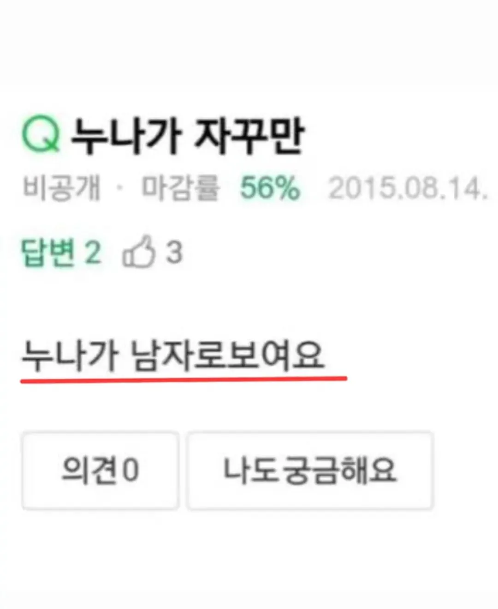

남자로보임지식in 누나가 자꾸만
댓글
원래형이더꼴림

누나가자꾸만져요 인줄
그렇게 동성애에 눈을 뜨게 되고, 근친으로 나아가는 이야기 어디?
이제 누나새끼가 미친놈으로 보여요까지 안간걸 보니 우애가 좋은거 같네
정상
심갇한 정상 남동생인
형이라불러
나도 궁금해요
가정이 망하려는 징조입니다
고추 안달린 형
삐빅 정상입니다
정상입니다

남자로보임원래형이더꼴림
누나가자꾸만져요 인줄
그렇게 동성애에 눈을 뜨게 되고, 근친으로 나아가는 이야기 어디?
이제 누나새끼가 미친놈으로 보여요까지 안간걸 보니 우애가 좋은거 같네
정상
심갇한 정상 남동생인
형이라불러
나도 궁금해요
가정이 망하려는 징조입니다
고추 안달린 형
삐빅 정상입니다
정상입니다
aa...